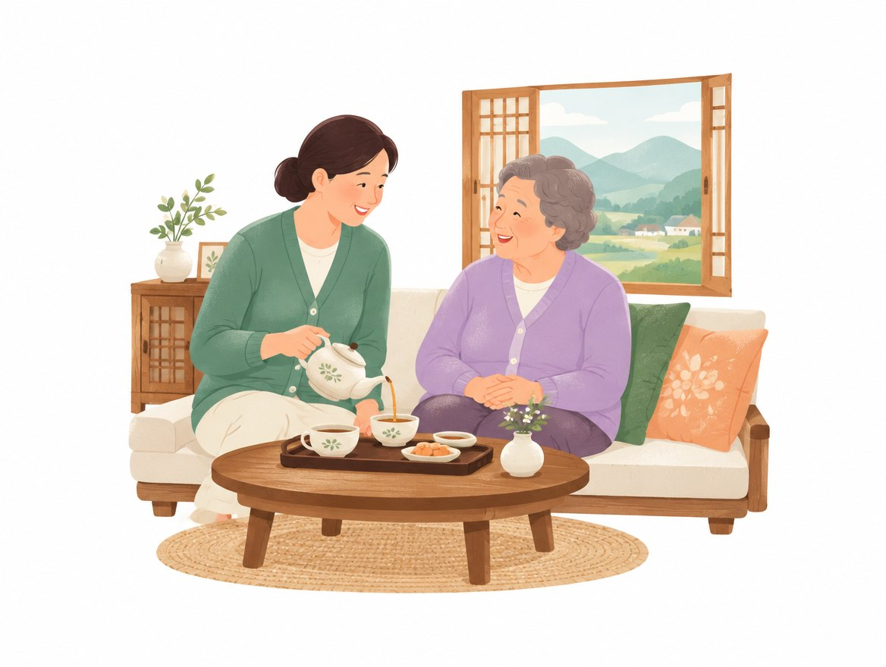
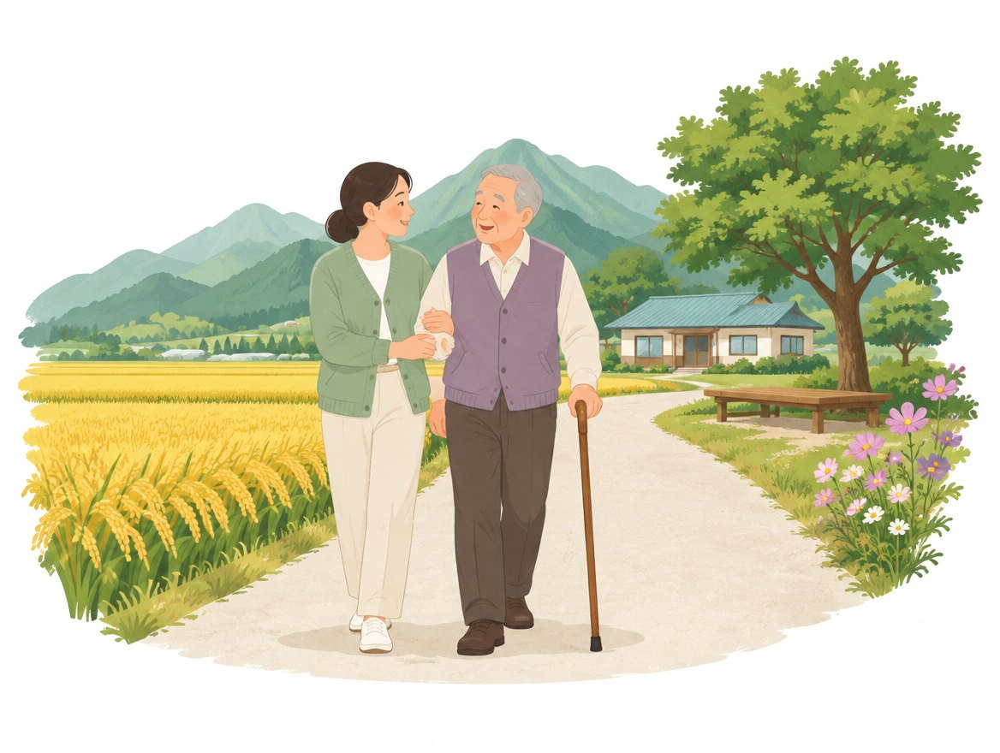
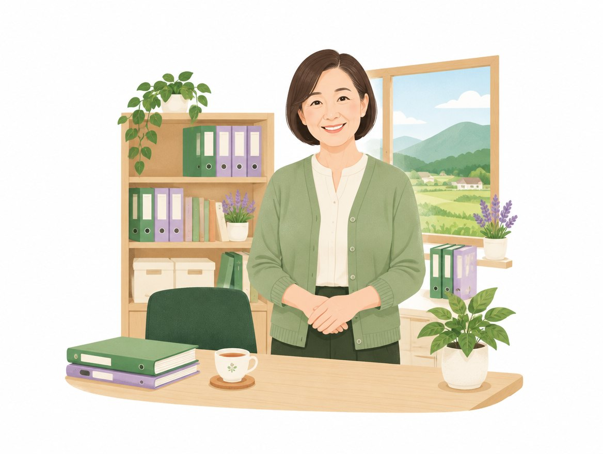
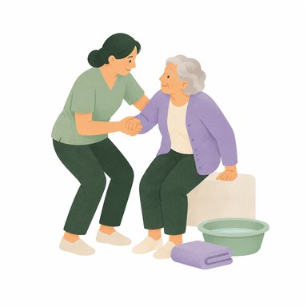
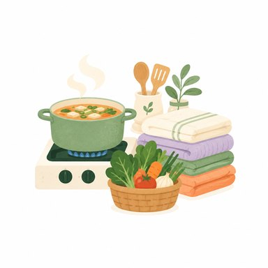
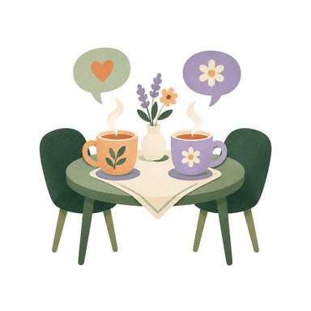
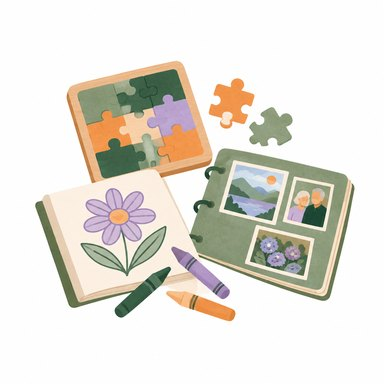

울산 울주군 어디든
어르신 댁으로 찾아갑니다
국가자격을 갖춘 요양보호사가 댁을 찾아가 식사와 위생, 일상생활을 돕습니다. 장기요양등급이 아직 없으셔도 신청 방법부터 차근차근 안내해 드려요.

장기요양기관노인장기요양보험법에 따라 울산 울주군에서 지정한 기관입니다
급여 적용비용의 85~100%를 장기요양보험에서 지원합니다
요양보호사요양보호사 자격증을 가진 분만 어르신 댁을 방문합니다
센터장 직접 운영사회복지사인 센터장이 서비스를 직접 살핍니다
지정 기관인지는 국민건강보험공단 장기요양기관 찾기에서 직접 확인하실 수 있습니다.
울산 울주군 12개 읍·면 어디든 찾아갑니다
울산 울주군 어느 읍·면에 사시든 똑같이 찾아갑니다. 상북·두서 같은 산마을부터 온산·서생 같은 바닷가 마을까지, 어디든 기꺼이 찾아가겠습니다.
지도는 위치를 단순하게 나타낸 그림입니다. 울산 울주군이 아니시더라도 궁금하신 점은 편하게 연락 주세요.
가족처럼 믿고 맡기실 수 있게 하겠습니다
어르신 댁에 들어가는 일이기에, 처음 만나는 날부터 매일의 방문까지 센터가 끝까지 책임집니다.

- 믿을 수 있는 분만 보내 드립니다
자격증 원본과 노인학대·성범죄 관련 결격 사유를 확인한 요양보호사만 방문합니다.
- 해마다 돌봄 교육을 받습니다
노인 인권, 치매 돌봄, 응급처치 등 법으로 정해진 교육을 빠짐없이 이수합니다.
- 건강한 몸과 마음으로 찾아갑니다
모든 직원이 해마다 결핵 검진을 포함한 건강검진을 받습니다.
- 센터장이 직접 살핍니다
방문 시각을 빠짐없이 기록하고, 사회복지사인 센터장이 어르신과 가족께 수시로 여쭙고 확인합니다.
우리 부모님도 받으실 수 있을까요?
해당하는 것을 눌러 보세요.
해당하는 항목을 눌러 보시면
여기에 안내가 나옵니다.
하나라도 해당하시면 장기요양등급을 받으실 수 있는지 상담해 보실 만합니다.
전화로 상담하기이 확인은 참고용입니다. 등급은 국민건강보험공단의 방문 조사로 정해집니다.
상담만 받으셔도 괜찮습니다. 자녀분이 대신 문의하셔도 됩니다.
어르신과 함께, 더 따뜻한 오늘

익숙한 집에서 오래도록 편안하게 지내실 수 있도록 곁에 있겠습니다.
삼동노인복지지원센터는 울산 울주군 삼동면에 문을 연 방문요양 기관입니다. 몸이 불편해지셔도 정든 집과 마을에서 지내고 싶으신 어르신의 마음을 지키는 일을 합니다. 요양보호사 한 분 한 분을 꼼꼼히 뽑고 가르쳐, 가족처럼 믿고 맡기실 수 있는 돌봄을 약속드립니다.
- 기관명
- 삼동노인복지지원센터
- 기관 구분
- 재가장기요양기관 (방문요양)
- 지정
- 울산 울주군 지정 노인장기요양보험 장기요양기관
- 센터장
- 박옥희 (사회복지사)
- 소재지
- 울산광역시 울주군 삼동면 삼동로 780, 1층 102호
- 대표전화
- 052-254-7115
지정 여부는 국민건강보험공단 노인장기요양보험 누리집의 장기요양기관 찾기에서 ‘삼동노인복지지원센터’를 검색해 확인하실 수 있습니다.
꼼꼼히 뽑고, 꾸준히 가르치고, 늘 살핍니다
확인하고 채용합니다
자격증 원본을 확인하고, 노인학대·성범죄 관련 결격 사유를 조회한 뒤에만 채용합니다.
해마다 교육받습니다
노인 인권, 학대 예방, 치매 돌봄, 응급처치 등 매년 받아야 하는 교육을 빠짐없이 이수합니다.
건강한 사람이 갑니다
모든 직원이 해마다 결핵 검진을 포함한 건강검진을 받습니다.
방문을 꼼꼼히 기록합니다
도착과 종료 시각을 전자 태그로 기록하고, 센터장이 서비스 내용을 직접 확인합니다.
방문요양, 이렇게 이용하세요
전화 한 통이면 시작됩니다.
어르신 상황을 편하게 말씀해 주세요. 상담만 받으셔도 괜찮습니다.
등급이 없으시면 신청 방법과 준비할 서류를 알려드립니다.
원하시는 요일과 시간에 맞춰 요양보호사가 찾아갑니다.
장기요양등급, 이렇게 받으실 수 있어요
- 센터에 전화 센터가 도와드려요어르신 상황을 듣고 등급 신청이 가능한지 함께 살펴봅니다.
- 신청 방법 안내 센터가 도와드려요신청서 작성 방법과 준비할 서류를 쉽게 알려드립니다.
- 공단에 신청하고 방문 조사 받기본인이나 가족이 국민건강보험공단에 신청하면, 공단 직원이 댁을 방문해 어르신 상태를 살펴봅니다.
- 등급 결과 받기공단은 보통 신청일부터 30일 안에 결과를 알려드립니다.
- 상담하고 서비스 시작 센터가 도와드려요원하시는 요일과 시간을 정해 요양보호사가 방문을 시작합니다.
한 달 본인부담금, 얼마나 될까요?
| 등급 | 2026년 월 한도액 | 일반 15% 최대 본인부담 |
|---|---|---|
| 1등급 | 2,512,900원 | 376,935원 |
| 2등급 | 2,331,200원 | 349,680원 |
| 3등급 | 1,528,200원 | 229,230원 |
| 4등급 | 1,409,700원 | 211,455원 |
| 5등급 | 1,208,900원 | 181,335원 |
방문은 대략 이 정도입니다. 하루 3시간 기준으로 1·2등급은 거의 매일, 3·4등급은 주 5~6일, 5등급은 주 5일 정도 한도 안에서 이용하실 수 있습니다. 실제 요일과 시간은 어르신 상황과 요양보호사 일정에 맞춰 상담으로 정합니다.
본인부담률은 공단이 정합니다. 일반 15%, 건강보험료 순위 하위 25~50%이고 재산이 기준 이하이면 9%, 의료급여 수급권자(기초생활수급자 제외)나 하위 25% 이하이면 6%, 기초생활수급자는 면제입니다. 대부분 등급을 받으실 때 자동으로 적용되며, 정확한 구분은 국민건강보험공단(1577-1000)에서 확인하실 수 있습니다.
요양보호사가 댁에서 도와드리는 일

몸 돌봄세면·목욕 도움, 식사 도움, 화장실 이용, 병원 등 외출 동행

살림 돌봄식사 준비, 청소와 정리정돈, 빨래, 생필품 장보기

마음 돌봄말벗, 격려와 위로, 생활 고민 상담

기억력 돌봄치매 어르신 인지활동, 일상생활 함께하기
자주 물으시는 것
Q등급이 없는데 상담만 받아도 되나요?
A네, 됩니다. 등급을 받으실 수 있을지, 어떻게 신청하면 되는지부터 편하게 여쭤보세요. 상담했다고 꼭 이용하셔야 하는 것은 아닙니다.
Q삼동면이 아닌데도 와 주시나요?
A네. 언양, 범서, 온양, 서생 등 울산 울주군 12개 읍·면을 모두 방문합니다.
Q자녀가 대신 문의해도 되나요?
A물론입니다. 멀리 사시는 자녀분이 먼저 연락 주셔도 어르신 상황에 맞춰 안내해 드립니다.
Q불편한 점이 생기면 어디에 말하나요?
A센터로 전화하시거나 문자를 남겨 주세요. 접수된 의견은 빠르게 확인하고 처리 결과를 직접 알려드립니다.
언제든 편하게 연락 주세요
궁금한 점이 하나라도 있으시면 눌러서 바로 연락하세요.
전화를 못 받으면 문자를 남겨 주세요. 확인하는 대로 다시 연락드립니다.
연락 주시면 이렇게 진행됩니다
어르신 상황을 편하게 말씀해 주세요. 상담만 받으셔도 괜찮습니다.
등급이 없으시면 신청 방법과 준비할 서류를 알려드립니다.
원하시는 요일과 시간에 맞춰 요양보호사가 찾아갑니다.
이런 것도 여쭤보셔도 됩니다
어르신 상태를 들려주시면 신청 가능 여부와 준비할 서류를 알려드립니다.
등급과 원하시는 이용 시간을 알려주시면 본인부담금을 미리 계산해 드립니다.
서비스 중 불편하신 점도 편하게 말씀해 주세요. 확인 후 처리 결과를 알려드립니다.
이런 분을 찾습니다
- 요양보호사 자격증이 있으신 분
- 울산 울주군에서 일하실 수 있는 분
- 어르신을 존중하고 성실하게 돌보실 분
신입도 경력도 환영합니다.
센터가 이렇게 약속합니다
운영규정에 정한 대로 지킵니다.
표준근로계약서로 계약합니다
근무시간과 급여를 계약서에 분명히 적고, 한 부를 바로 드립니다. 4대보험에 가입하고 퇴직금도 적립합니다.
선생님의 인권도 지킵니다
일하다 겪는 부당한 말이나 행동은 센터에 알려 주세요. 센터가 나서서 해결하고 보호합니다.
고충을 듣는 창구가 있습니다
어려운 점은 언제든 센터장에게 말씀해 주세요. 익명 고충함도 있고, 처리 결과를 꼭 알려드립니다.
지원 절차
- 전화나 문자로 문의궁금한 점을 편하게 물어보셔도 되고, 바로 지원하셔도 됩니다.
- 면접센터에서 센터장과 만나 근무 조건과 하는 일을 함께 이야기합니다.
- 자격 확인과 건강검진요양보호사 자격증 원본을 확인하고, 결핵 검진이 포함된 건강검진 결과를 받습니다. 법에 따른 결격 사유 조회도 합니다.
- 근로계약과 첫 교육표준근로계약서를 쓰고, 센터 운영규정과 급여제공지침 오리엔테이션을 받습니다.
- 어르신 댁 방문 시작처음에는 센터장이 함께하며 어르신과 가족께 인사드립니다.
급여와 근무시간은 상담 때 자세히 안내해 드립니다.